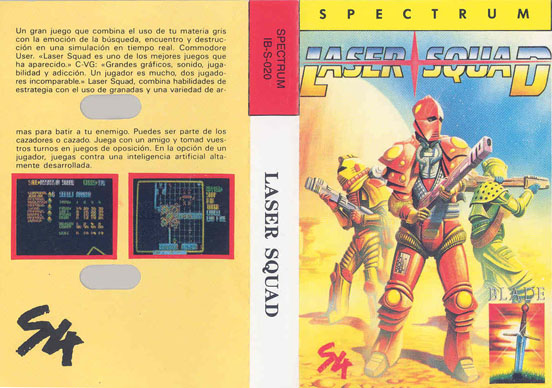
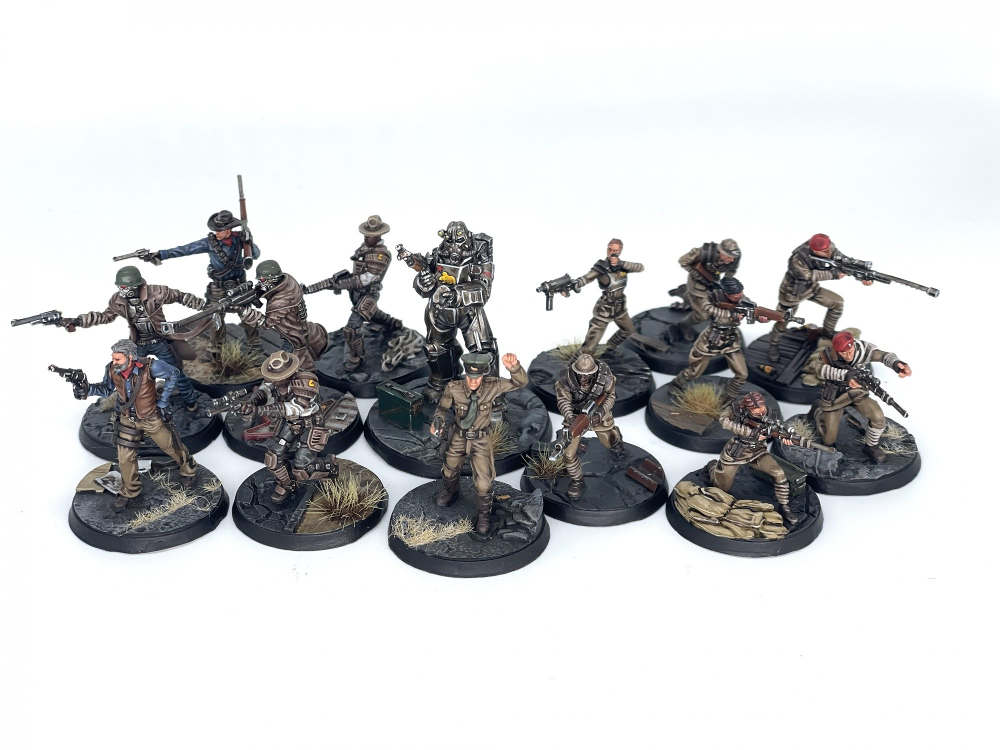
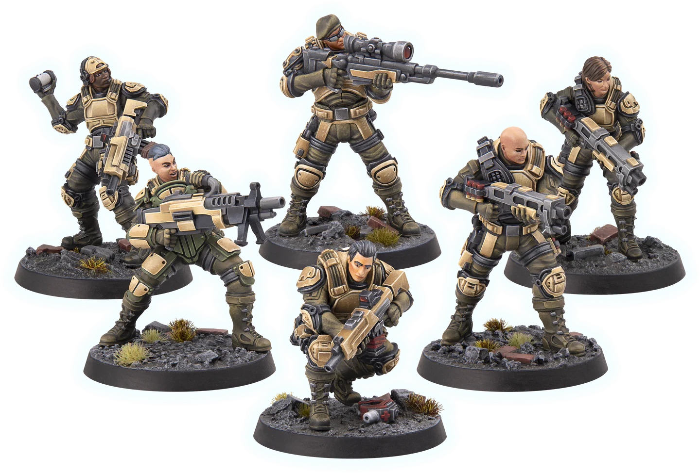
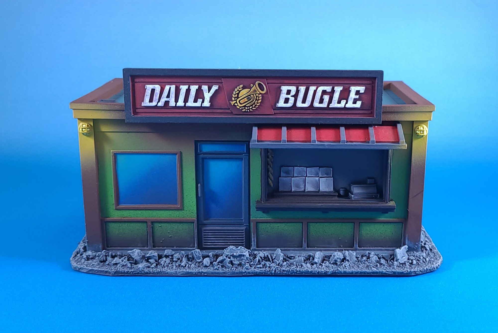
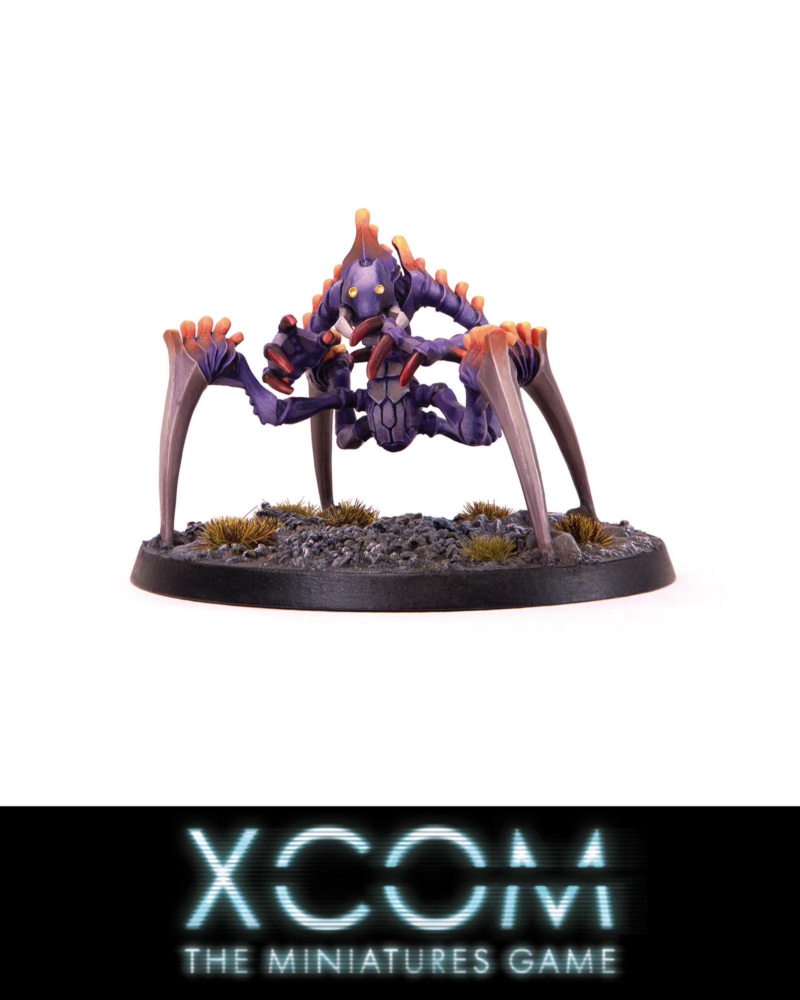
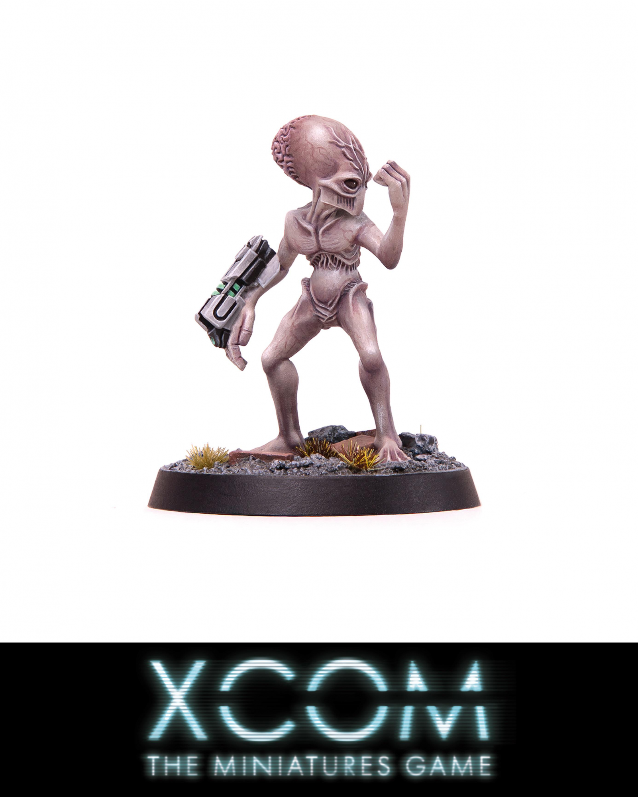
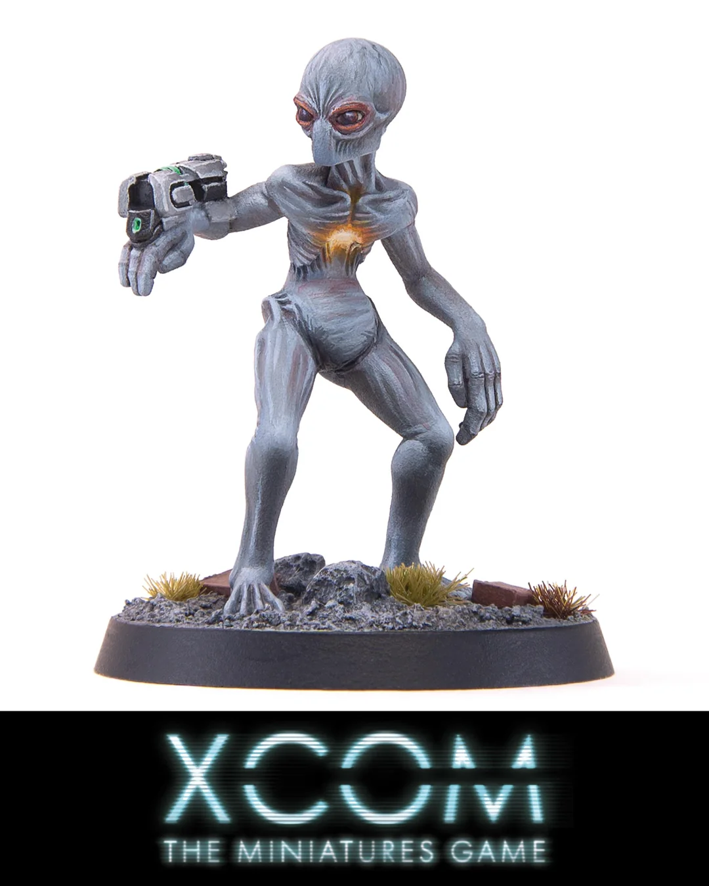
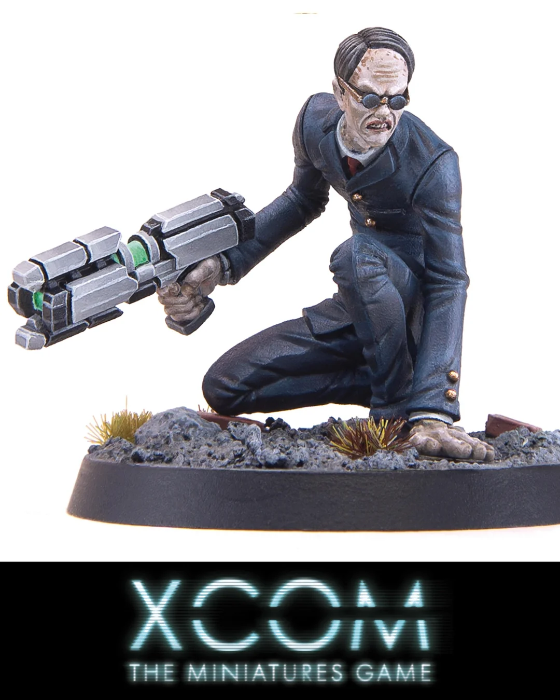

XCOM: The Miniatures Game — Interviewing Chris Birch from Modiphius
This interview has been lightly edited for clarity. A video version of this interview/priority transmission is also available:
Campbell: Hi, I'm Campbell McLaughlin, Tabletop Battles' resident video guy, and today it's my pleasure to speak with Chris Birch from Modiphius Entertainment about their new XCOM game. Hey Chris, how’s it going?
Chris: Oh good, ready for the weeks ahead. It's gonna be a lot of fun.
Campbell: Are you guys about to have a big launch of this at Gen Con?
Chris: Hmm, maybe.
Campbell: All right, cool. start Starting with the hard questions here. Chris, would you mind telling us a little about yourself and maybe your background with Modiphius and in the games industry?
Chris: Well, I've been running Modiphius with my wife, Rita, for 14 years now. We started after I had been running a t-shirt company called Joystick Junkies. And I'd literally been there, bought the t-shirt, and was fed up of clothing. So this little kind of quirky thing called Kickstarter had come along, and a few people had been launching games on it. So I thought I would start selling some PDFs and books called Achtung! Cthulhu and we'd make enough to keep me busy at occasional weekends, and it took off and was a huge success. So we hadn't planned to start a company and then decided to be responsible with the money, and not immediately book every single convention under the sun, just you just in case, because it it felt too good to be true. But we've then gone on and used a lot of the contacts I had from the t-shirt company. We were working with lots of video games companies. So we went on to work with a lot of big video game companies like Bethesda for Fallout and Skyrim and Paramount for Star Trek and so on. And that's kind of the background in Modiphius, but I was working with Cubicle 7 back in the early 2000s. I co-wrote a game called Starblazer Adventures with a friend of mine, Stuart. It was like a Fate-based space opera RPG. It's about 636 pages, bit of an epic So we did that and then I worked with Cubicle 7 on getting the Doctor Who rights for them, but I was so busy, I was a big techno club promoter. So I couldn't really kind of put the time into it. So I kind of helped out a bit where I could. And then, it was me and Rita in a basement flat in London, and now it's 70 people all over the world. So we've grown a lot since then.
Campbell: So for something you're just planning to do on the weekends, I think it sounds like it's ballooned just a little bit.
Chris: It has, yeah.
Campbell: Well, that kind of explains where some of the licensing stuff comes from, because y'all at Modiphius do so many licensed games you mentioned. Fallout, Star Trek. You've also got Elder Scrolls, Wolfenstein, and Dune under your belts, you've got some pretty cool licenses. What led you to XCOM?

Chris: Oh, gosh, I played Laser Squad on the Spectrum back in the day, if you remember that. Before that there was another little Spectrum game. um I think it was... Rebelstar I think it was, it's not quite the name. Laser Squad was such a brilliant game, and which ultimately ended up becoming the early X-COM games. It was the first proper turn-based, you know, tactics game like that, with its brutal combat and the really fun nature of the Men in Black and the aliens and your little special operations team and the whole campaign, it really struck something in me. So I think when we were looking for ideas for what we were going to do next, I went to 2K, who is the games company that publishes Firaxis. And this is about gosh, 10 years ago when I first started that. And sometimes you've just got to be persistent. I probably dropped them a line every couple of years and the people changed. And then we ended up working more recently with Gearbox on Homeworld, the Homeworld Fleet Command Board game and the role-playing game. They then got acquired by 2K, and then the team got combined, and then suddenly they represent the 2K brands. So I was like, “hey, so what about XCOM?” And it took a bit of convincing because sometimes these companies, they're working on big video games that are going to make them multiple millions, and here’s this little game that's going to make them a little splash of money, it can be too much work sometimes. And it's not that they don't want to support the community, it's just that they don't always have the teams that can do the approvals. There's a lot of work to go through, text and imagery, so you've got to be sensitive to that and try to work around and find ways to make it easy for them. But anyway, long long story short, they said yes! The team's done an incredible job with the miniatures and we brought in Ivan Sorensen because we've been publishing all the Five Parsecs games. So I think we put a great package together.
Campbell: Very cool. Because I was wondering, why now for XCOM? It's been a minute since the last game came out. I think, Chimera Squad came out five or six years ago. XCOM 2 came out probably closer to ten years ago. That hasn't stopped me from putting 100 hours into it since then. But…
Chris: Oh I know, same here and you know XCOM 2 still has really big numbers of daily players on Steam. I was playing it about a month ago; it doesn't go away. It's the great thing about the XCOM series, it just seems to be very persistent with our lives but sometimes these games can take time. But also, a game like this, it's just got a lot of love in the community. It doesn't need a new game to make people want it. And that’s why we brought back Conan and John Carter. And, you know, Dune is a great example. Obviously, it had a film coming, so that helped. But I would have done it without the film because I knew there was a big audience who were aware of it from the original role-playing game. So these things have a life of their own and, the fan base doesn't really care what's new, they actually want what's old. When we did Thunderbirds as a board game with Matt Leacock, I was talking with ITV, the TV company in the UK that had the rights, and they were like, “but we're making a new TV show. Don't you want that? Everyone wants that!” I said “no, I want the old show. That's that's actually what is cool.” And they couldn't understand it. So sometimes you've got to weave around and look at what actually the community would want, not necessarily what's the new shiny.
Campbell: I appreciate that sort of, I don't want to say fan's perspective, a fanatic's perspective is more like it.
Chris: Yeah.
Campbell: So what's it been like working with 2K on this? Obviously, everything needs to be approved. Everything needs to look right. Everything needs to kind of feel right. But how has that process been? I know it took a while to get started. but once you got those connections with the Gearbox folks has it been pretty smooth?
Chris: Oh yeah, they've been amazing. It's always the way when you start with a new company, there's a different studio that we haven't worked with. So for access they want to see everything. And then after a while they're like, “okay, if it's just in the same style as that, then it's fine.” There's a lot of nervousness around a big project, you know it's their baby. That's why we make sure that people who work on the project really honestly love XCOM or Conan or Dune or whatever it is, because you want to do a really good job on it. And the closer and more authentic you are to the brand, the more easy it is to get approved. And so I spent a lot of time walking them through the types of things they'd be seeing, the types of approvals they'd have to do, the amount of it before we even got the deal agreed, so hopefully we've made it as easy as possible for them. But they've been really supportive, they seem to love what we do. And the the fan base seems to be lining up for it as well.
Campbell: You've got a good track record with authentic feeling stuff from Modiphius.
Chris: Yeah.

NCR Collection. Credit: SRM Campbell: Speaking of authentic, I want to talk about the models for a bit. I've got a cabinet full of Fallout minis I've painted. I've read the books. I haven't really gotten to play the game as much as I'd like to, but I've sure painted a lot of the minis. When I first saw the XCOM minis, I'm like, “oh, these look like the game.” and I know that sounds kind of obvious, but the aesthetic of the game is very chunky and feels well suited to miniatures. What considerations there were when translating those game assets and designs into physical objects?

Chris: We took a bit of a conscious decision recently, maybe about a year ago. We were doing insane levels of detail on our resin miniatures, and resin's great because you can put a lot more detail. But I think some people were like, “I can't paint the eyeballs or like the chain links on their armor.” So we started to look at slightly dialing down the level of detail actually to be more fun to paint. There's a tricky balance there between beautiful detail, but actually a positive experience for the average person who's painting. The good thing with XCOM is we're working with a game that's pretty old. And so there are no in-game 3D models. We've re-sculpted everything from the screen grabs, from the footage. And because it's an older game, there's a lot less detail. So we've actually had to create some detail in places to make sense. But as a result, I think we've got some really great looking figures that are going to be super fun to paint because there aren't really, really, massively detailed components. There's some really nice flat parts. It's going to be, I think, really fun for people to paint and put them together. And the other good thing, actually, I just discovered with our resin sets is that the arms are somewhat interchangeable, which was a happy mistake. We hadn't planned for that.
Campbell: That's very cool. We talked about XCOM 2 a smidge here earlier, but that game's got so much customization and being able to customize your dudes is half the fun. It's part of the stories you make with them.
Chris: Oh yeah. Campbell: The details from your resin models are kind of wild, and I mean that very positively. Some of the Fallout minis are, because they're based on Fallout New Vegas that came out 15 years ago or whatever, are markedly more detailed than the game assets. They look great, but you’re definitely getting in there to paint the belt buckles. Chris: I think it's a good example of the team's authenticity that there must be, I don't know, 500 models that we've done for Fallout now. I think all but five sailed through with a few days of approvals and maybe the other four or five, you know, that was like, “that hat’s too big, ‘cause it's my girlfriend's hat.” just odd little things that we could never have known. The team really, really get it right. They really do the homework and make some great models. Campbell: They definitely do. So you said these are resin. Is it going to be a predominantly or all resin range? Is there going to be any plastic in there, or 3D prints? Chris: We announced a couple of days ago that we're doing hard plastic as well. So the the range is going to be in resin, which will be available actually sooner, this side of Christmas it will ship. If you order the hard plastic sets, they're cheaper because you can make more of it. Hard plastic will ship after Christmas and hard plastic is what's going into the retail stores. Resin, that's for the collectors, it's from our web store only. The hard plastic sets are honestly what most people want. We just did a survey and pretty much 70% of people were like, “give me hard plastic all day, every day.” so I think that was the right decision. We had so many people signing up and I just kept seeing people say, “is it going to be hard plastic? Is it going to be hard plastic?” And so, you know, we've been doing hard plastic for Fallout. And I was meeting my friends at Archon, and taking a look at their lovely StarCraft miniatures up in the Polish factory. They were able to fit us into the schedule this year, which has been great. So we're kind of currently working with their engineers to convert the miniatures over to the hard plastic versions. And they pretty much should be identical. Like they don't have to make loads of mega changes. Campbell: That's awesome. Jarek and all the Archon people do great work. Chris: Yeah, they do. Campbell: What's the difference in designing stuff for resin versus plastic, or is that just too much of a sculptor question? Chris: Well, resin has certain tolerances that you can't go below, you know like a sword blade. People go, “why does it look like a plank of wood?” And that's usually because you literally can't go down to a very fine blade because resin will just snap. There's a certain tolerance. You wouldn't put a hand with fingers out. You'd have it gripped or you'd be gripping an item. The resin we use is really good quality. It has a lot of flexibility but hard plastic has a lot more flexibility. Like you could drop a hard plastic model and it won't break. I mean, even ours typically won't break, actually. Hard plastic is on a sprue, so it's more like a model kit. And sometimes you might be able to put more into the sprue, so we're looking at whether we can do that. Also, you can start to put more parts into a plastic sprue if you plan ahead, so for the next wave of releases - because we've literally only done a couple of sets of aliens and and a set of operatives as the first wave of goods - we're looking ahead to offer more options on, say, a set veterans in the different armors. Hard plastic does give you some interesting opportunities. Whereas resin is very much a handmade product. It's literally poured by people in a factory into a mold and then they peel the mold apart and pull your model out and dust it off and clean it up. And so it's very time consuming, which is why it's usually a bit more expensive. Campbell: That makes a lot of sense. You've made some wonderful terrain over the years for Fallout, and especially I'm thinking about the Vault sets and all that. Are there any plans for terrain or large models like the Skyranger down the line? Chris: We've got a little bit of terrain coming that will be shown off soon. For example there's an Infection Pod which um doesn't really do anything in the game but you can imagine all those people who've got their Marvel terrain or their modern warfare terrain. Throw down a bunch of modern day buildings on a board and put an Infection Pod in the street and now you're in the XCOM world right? So it's it's those little things we've looked for that just say “XCOM” without having to do loads of work. We are looking at obvious stuff things like Skyranger and stuff and we're exploring that. Would the Skyranger be something that is 3D printed maybe uh because it's just so big? We could make it in resin but it would be like 200 bucks, it would just be silly, whereas it could be a FDM or resin model. We're not planning to put the main miniatures into .STL but i think potentially the larger scale vehicles and terrain pieces might be good candidates for that

Campbell: That makes a lot of sense. I was just thinking last night about like those Marvel Crisis Protocol apartment blocks. And those look great for these little guys to run around.
Chris: Yeah, yeah. They're slightly off, because I think they're 35mm scale, I think. But there's so many people that do modern day stuff. So Battle Systems have a great cardboard clipped together, modern day street scene. You've got Monster Fight Club that do their really nice clipped together buildings. We've got our own building set in the Fallout Factions: Battle for Boston miniature set. There's some kind of ruined terrain as well. There's a lot of great stuff on market, tons of 3D print modern buildings as well. And that's the great thing about this - it's so easy to populate a bit. Or you can just have some trees, there's so many levels that were in the forest, and then there's a little building or a shack or a secret base somewhere that you have to infiltrate. So you can have a lot of fun, I think, constructing terrain.
Campbell: Aare there any plans for special characters? I know there's like only a couple in XCOM. There's more in XCOM 2, but are there plans for characters like Central or, you know, the Chosen, for example.
Chris: Yeah, you've got people like Bradford and Shen and others. I can't say yes or no, but we wanted to get all the basics out first, so the basic operatives and then the veterans in the nice armor. You've got the cool upgrades for them. Then there’s a whole bunch of aliens and things like the MEC Troopers and the SHIVs and things like that. So there's quite a lot for us to get through. And I think then that's probably when we'll start looking at stuff. Because you've got to bear in mind that um you know people might buy multiple sets of aliens, but they'll probably only buy one Bradford, and there's only so many different poses you could put him in. But yeah, I'd like to do stuff like that, but that's kind of more for the tail end. Maybe he'd be a promo for a later wave of products. So watch that space.
Campbell: So what's the sort of roadmap looking like here? Like is a monthly cadence sort of the idea?

XCOM Chryssalid. Credit: Modiphius Entertainment Chris: Well, we've kind of planned it out. So the retail is going to be early next year. So the pre-orders should ship before Christmas and just after Christmas, depending if you pick the resins or hard plastics. And then we've kind of built it like the months in the video game. So like month one, which is the pre-order, you've got your Sectoid, Sectoid Commander, Thin Men, and the Outsider, the ones you typically see first, right? Next wave, set two, which is also in the pre-order, is the Chryssalids - got to love those - and the Seekers and and Floaters. So they're like the next level of tough aliens that you come across. And then we're going to work our way through the campaign. So it's kind of almost month by month. So every set you get really is enough for quite a few games and then adds to the variety of the aliens that appear. And then you're going to have Mutons and Muton Berserkers and Muton Elites and Cyberdiscs and so on and so on, as we go through all the way through to those lovely people, the EXALT, who are almost another level of difficulty to add to a run. So, yeah, there's plenty to keep us busy. The idea is that each month's release is a box set that gives you everything you need to play, you know, maybe one or two months of the actual campaign game, which is multiple missions. And then unlike, as you may remember from the video game, you stop seeing certain aliens over time, right? Campbell: Right. Chris: But that doesn't work for a war game. Because wait a minute, I painted all those cool Thin Men, I want to see them! So we've got a slightly different spawning mechanic so that you still get to see your cool miniatures that you painted. Now, the emphasis will be on the new ones, but there are still chances for Thin Men to appear maybe in, you know, month seven of the campaign. Campbell: So we're talking about the campaign. Let's talk about the game a little bit. How long is a campaign kind of set to last? How does that really work? Chris: So there's various achievements. It's things like capturing an alien, researching certain technology. If you remember from the video game, there are certain triggers for the attack on your base. And then there's a final trigger piece of equipment that you build that then unlocks the final fight, the assault on the alien ship and when you fight the uber Ethereal. So there you have within your power the choice to move to those various kinds of narrative events. If you choose to add in the EXALT, they add in all sorts of extra stories as well, or extra specific missions. There's 33 different missions that you can play, specific missions that have been developed. Campbell: Not bad. Chris: Some of those are EXALT. Some of those are triggered missions that you only play when a certain event happens. The rest are random missions that come up and of course as you go through the campaign the types of missions you play evolve and change so you're going to get variety. There's lots of opportunity for just playing through some cool missions or actually pushing the campaign forward by doing a certain research Campbell: Sounds like a good bit of replayability in there. Chris: Yeah, and of course you've got council morale, which is a bit of a timer because if that suffers, then you can lose the game. Campbell: I was going to ask if you can lose the game because, you know, not naming names, but maybe someone on this call has lost an Ironman Impossible campaign or two in their time. Chris: Only a few of us, maybe, yeah! Campbell: Who could say? Chris: If council morale fails, then, you know, they've given up. We give you plenty of reasons to keep going, you know, like support and help.We've also got some dials within the game. If you're like, “something's not working for me. I just keep struggling.” You can change one of those dials to help you a bit, or restart the campaign and try something different. So there's various ways to kind of help people, because we all like different levels of difficulty. Some of us want the brutal pain and others just want to follow the story. Campbell: So how long do typical skirmishes last? So there's like 33 missions. I imagine some are again, like the video games, more involved. Some are just a couple of guys fighting over a gas station in a field - we've all rolled up those random missions. Chris: It's a classic war game, typically, where you've got these six operatives on one side and a number of aliens on the other side and various objectives. So different missions will encourage you; you really can't just sit still. You've got to go after the objectives. You've got to go after the spawn points, which you can try and shut them down. But that means sometimes going to the edges of the table or into buildings, there's lots of unusual stuff to find. There's unusual objectives that might be civilians to rescue. There might be alien resources to capture. I would say that a quick mission can be probably an hour and a more involved one could be a good couple of hours. So it's sort of fairly standard for a war game, I think. Campbell: And there's solo and co-op game modes. How do those exactly work? Chris: There's four, actually. So you've got solo, that's the classic game, co-op where you can split the squad between you or have a couple of squads. Then we have a PVP mode where you take a squad of aliens and I take a squad of operatives, or we both take a squad of aliens, and it's a point-based game, and we just throw down and do a squad-based battle, and that's it, and there's no campaign. Or you could take the aliens in the campaign. I play the operatives through the campaign. Whenever the aliens turn up, then you control them on the battlefield in a more intelligent way. So there's various ways of doing it, and there's a few dials with that that kind of change how they work as well.

Campbell: So for the player versus player campaign mode is the human player the one moving forward the pace of the game while the alien player just plays as the bad guys during missions?
Chris: Yeah, they don't get to change their ships because that's not in the video game. It's just like, OK, we'll roll up what the enemies are going to be, and then my friend gets to control them and be a bit more evil in how they act. More alien intelligence involved.
Campbell: That's very fun. So the game system here is based on Five Parsecs From Home from what I was reading.
Chris: That's right, yeah. So Ivan Sorensen, who was the creator of the Five Parsecs games, they always had a touch of XCOM and a touch of Traveller and a touch of every other sort of classic (sci-fi) game. And so when we came to work on this, it just felt like the obvious match, really. We love the solo/co-op mechanics, and I think this was what people wanted from a miniatures game for it, but then obviously adding in the PvP side to it as well. But I think Ivan's got it just right in terms of the level of difficulty. Got base building in there, you've got R&D, and we just did a game called Planetfall where you land on a strange alien world full of wrecked starships and ancient ruins. And we have a colony building program for that. So we've used every game we do. We kind of learn a bit more and add in some different fun mechanics.
Campbell: Well, I've noticed there's a lot of expansions for Five Parsecs. Like i saw one that's just called “Bugs” or something along those lines…
Chris: Oh, Bug Hunt, yeah. So here's the clever thing. Every single book is standalone. You can buy any of those books and play them. So Bug Hunt actually has some expansion material for Five Parsecs, but is its own game of Marines versus aliens. You know, it's very much military up against the bugs, whereas Five Parsecs is the vanilla experience, like you're a crew on a ship somewhere on the frontier, stuff happens. And then Planetfall is you're a crew, but now you're on a colony. You're just on this world, and all sorts of weird and strange things are happening. These new aliens are appearing. Go and explore the ruins. See if you can build your colony. And it has a definitive end to it. I think it's like six different endings, and we've got more planned. Oh, we've got (Five Parsecs From Home) Tactics as well, where your crew is now part of a mercenary unit or an army unit, and you can have anything from a platoon up to a big army mass battles type game. And it gives you the sort of procedural rules to play solo co-op war games, effectively bigger scale war games. So we've built a really interesting kind of playing field for everyone, doesn't matter the experience you want. And we've got more to come. There's one, two, yeah, four in the works at the moment to give people new, interesting experiences.
Campbell: Sounds like you're kind of getting to pick and choose elements from those for the XCOM game pretty willy-nilly.
Chris: Yeah, and it was very good. Like I said, it just kind of wrote itself. It was just so obvious.
Campbell: As you said, there's definitely some XCOM inspiration in Five Parsecs, among other things. How did you - or how did Ivan modify it to feel more like XCOM? Like what's in XCOM's DNA that just had to make it to this game?
Chris: One of the things was the dice. So Five Parsecs is usually D6s. So we went with D10s. And people are like, “oh, why didn't you use percentages?” Well, OK, you could add a zero onto what you roll if you really want to, but there's no point replicating the video game because you might as well just go and play the video game, it'd be much easier. So this should feel like XCOM, but not be as complicated. It shouldn't have the granular level of detail because it's great when you've got a CPU running all that for you in the background, but when it's your flesh and blood CPU, you want to keep the overhead down. I want to get that sort of touch and sense of like XCOM, like the aliens moving up on me, the kind of chaos of it, like my guy's missing and you’re trying to get on overwatch in time and all that stuff. And you have to make some difficult design decisions. But yeah, it's a roll under mechanic for the D10s, and that felt close enough to a percentage system. There were some tweaks. Five Parsecs has more of a procedural narrative nature to like when you get back from your mission, you go to town and you can send one guy off to train and you send another guy off to look for rumors in the bar and they might get into a fight or find an enemy. There's all this sort of unusual stuff can happen whereas XCOM is much more, you get back from base. Who do you think should be promoted? And you can pick a number, depending on the roll, you can pick a number of people to try to promote them because you think they did a good job as the commander, and they might get promoted, then they might get some extra stats. And then I got a certain amount of resources and research points. So now I want to build this base or this new facility, and that's going to let me unlock this gear. I'm going to research this tech, which means now I can have laser weapons. But you can't do everything. So like, are you gonna focus on armor and other unusual tech, or really go into weapons tech? Difficult decisions gotta be made all the time.
Campbell: I mean, difficult decisions and extremely bad luck are kind the foundations of XCOM as far as I'm concerned. Everyone's had that 95% shot with their favorite colonel or whatever, right in front of a Chryssalid, they beef it, they die right then and there.
Chris: Absolutely, yeah.
Campbell: So then your other guys panic and start shooting each other. Is there that sort of chaotic cascading failure, for lack of better term?
Chris: Well, we do have morale in it. So, yeah, your own guys can suffer. If they see someone go down within a certain distance, then you have to test their morale, and chaos can ensue. So you've got to really think about your placement of your figures, your tactics, and just like in the video game, if you just go running down the street, you're going down. Like, you know some idiot Sectoid with a crappy plasma pistol is going to take you out, your favorite guy, if you're if you're not careful. So you've got to really plan your tactics with these games.
Campbell: And like you said, there's a lot of ways to kind of adjust the difficulty in case you do want to play it a little more carelessly, let's just say.
Chris: Oh absolutely, yeah.
Campbell: Is there destructible terrain in the game at all? Because the blowing up cover is one of the more satisfying things to do in the games.
Chris: Yeah, there's some, and we actually include with the book, there's some token sheets so people don't have to print them out or cut them off. And we're also doing a nice set of beautiful acrylic tokens, of course. But there's some token sheets with the book, some cardboard die cut tokens that include things like destructible terrain to mark if that happens.
Campbell: Did anything surprising come up during testing the game? Any big ideas on the cutting room floor or anything like that?
Chris: I mean, we put everything in. We did wonder whether we should have started with a smaller book and not given everyone everything, because we basically included all the expansions. So you've got Enemy Within which means you get the gene-modded troopers, the MEC troopers, the extra alien enemies, and then you get the EXALT, but EXALT are kind of like, hey, if you really want to add them in, this is how to do it. And then of course we've got a nice set of miniatures for them and their little pinstripe shirts. We took the decision to just give people the whole experience. So it's like a 280-page book, it's got a lot in it. That said, a lot of that is all the gear and all the aliens with their stats. You've got the 33 missions. So that's a page per mission, sometimes two pages, which goes into a lot more detail about how to set it up. The actual rules are fairly straightforward. There's a three-mission tutorial, which Ash Barker showed on Guerrilla Miniature Games the other day. It teaches you the rules bit by bit, so you can just get used to the flow of the game, the basic mechanics. So I think this is going to be one of those books that people are just going to be lying around reading for hours and hours and hours and poring over and figuring out how to build their terrain and what forces they want to build up.
Campbell: Sounds like a rich resource for long campaign play.
Chris: Yeah, yeah, definitely.
Campbell: How are you going to be incorporating updates down line? Like you said, there's pretty much everything you need here. You mentioned a bit about like every month or so, much like in the games, here's some new enemies, here's some new missions, how is that going to be packaged together? Is it just like, “here's your April 2027 box?” Is it going to be like, “oh, here's a download for a mission. Here's a box you can buy.” What's the sort of process there?

XCOM Sectoid. Credit: Modiphius Entertainment Chris: Well, everything's in the book. So you get all the stats for all of the aliens in the entire Enemy Unknown, Enemy Within game and its DLCs. So there's no stats you won't have, unless you want Bradford’s stats, which is a later thing. So you've got all the aliens, you've got all the armors. you've got all the weapons, all the gear. The box sets and miniatures don't have any game rules in them or stats, so it means is we can sell those boxes anywhere, because when you start putting cards with English on them, then you can't sell it in Spain or can't sell it in Germany which is a bit of ah a pain for miniature games when you want to try and sell them to more people. The great thing is, like I said, you've got everything in that book when you buy it from us. And then honestly, you can play with your own miniatures. We'd love you to play with the official miniatures, but nothing's stopping you playing with a bunch of Space Marines and a Tyranid horde. That was on purpose because we wanted people to be able to pick up the book and try it, maybe just figure out what they wanted, and then invest in the miniatures. Or with the pre-order there'll be some bundles that people can go all-in on or just get some starting stuff, so that when the miniatures come out on a monthly basis, it’s at the minute the aliens appear, and they're in the numbers that you need for the spawning in the game. Two Mutons could appear at the same time. They might also appear later in the mission and if they're still on the table, then you go down the table to the next two, so of course you could buy two sets of them so that you can have four Mutons on the table. I don't know anyone who would want to have multiple Mutons and multiple Sectoids - I'm sure you know none of the people listening to this are currently thinking how many sets of Sectoids going to have. Campbell: (chuckles) Famously people in this hobby don't collect multiples of the same thing or try to build armies, nobody does that. Chris: Who would want to do that? It's the most ridiculous idea. Campbell: Yeah. Chris: So anyway, the idea with these sets is I just need that set - like that's all I need. And when Mutons spawn, I can spawn them. The alien set two is two Chryssalids. Typically, you have the two Chryssalids appear, or there's two Floaters and two Seekers. We’ve got a wonderful seeker with its tentacles trailing out behind, and another one with its tentacles out as if it's about to grab someone. You've always got enough for one spawn of them so you can play the game. And then if you get Seeker spawn again, you can spawn one of your other miniatures, maybe some Thin Men from the first set. But of course, if you want, you can buy multiple sets. So it's up to people. I usually like having big games. I like having lots of everything, but you don't need it. I always like to try and make sure it's pretty clear what people need. They don't have to go all-in, you know, go crazy. Campbell: So it's pretty clear right now y'all are just focusing on XCOM, sort of in that umbrella and its expansions. I assume it's probably far too early to even think about talking XCOM 2 stuff.

Chris: Yeah, I mean, we're working with “XCOM” so you can read into that. But they have to approve everything. So I'd like to think that in the future we might do more, but we've got so much to do with XCOM: Enemy Unknown still. With all the sets that's like, seven, eight months of just doing one of everything, right? And then, because you can't do every set of armor with every weapon - it would be insane - so we've done a really nice set of the popular armors with the popular guns so maybe we'll do variations on that. Maybe we'll do a community vote or something. We've done the Thin Men in their classic poses from the video game. So we've tried to do everything like, “oh my God, I remember that. That looks exactly like the character.” But there's plenty to keep us busy afterwards. Like you say, we start getting to some of those characters and different reposes and um scenery and things like that.
Campbell: Very cool. So that is all my questions today; I'm wishing I had more, actually, this has been a delight. Is there anything else you want to plug or let people know before we sign off for the day?
Chris: Well, I guess, yeah. For miniatures, we've got a few other things releasing this fall. You've got Cohors Cthulhu: Tactics, which is actually my baby. I wrote the rules for it based on Clash of Spears with a lot of changes. And then the dev team and the design team at Modiphius also helped get it into a really good, healthy place. That is a solo/co-op narrative adventure war game where you you start with a hero, usually a Roman officer, and then you've got a few archers and legionaries and you're fighting Cthulhu creatures in the forest in Germania and you gradually build up your force and you actually can get up to mass battles. So you can have mass battles, all solo/co-op designed and and as you develop your character, you're making quite important choices about a hero's journey. So you spend denarii from killing monsters on building your army, but you get hero points for achieving different objectives to spend on your hero's journey. And those are really interesting choices that you make, whether you're fighting for love or honor or glory, are you fighting for your family? Are you trying to get promoted into the Senate? Is your blood special? Are you a descendant of Atlantis? And it's your choice where to take that story. So it's really got some interesting ideas. And it's 28mm scale, so it's compatible with all the other Victrix and Warlord Roman and historical miniatures out there. And then we've done Hardwar, which was a Kickstarter a year ago, which is 6mm tanks and mechs, basically. That's a player versus player game, but also has solo and co-op modes as well, which you'll see is a regular feature and fixture on our games. We always like to make sure there's really good solo and co-op mechanics. So yeah, that's lots of stuff coming this fall.
Campbell: Awesome. Well, I'm glad y’all have a pretty packed release schedule. You're definitely gonna be kept busy with XCOM, Hardwar, and all the rest. Thank you so much, Chris,this has been a delight.
Chris: Yeah, thanks for having me.
Campbell: Of course. Have any questions or feedback? Drop us a note in the comments below or email us at contact@tabletopbattles.com. Want articles like this linked in your inbox every Monday morning? Sign up for our newsletter. And don’t forget that you can support us on Patreon for backer rewards like early video content, Administratum access, an ad-free experience on our website and more.Originally published on Goonhammer.


{kind=link}
{kind=link}
{kind=link}
{kind=link}
{kind=link}
{kind=link}
{kind=link}
{kind=link}
Leave a Comment